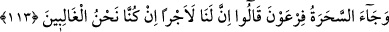
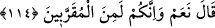

113. Sihirbazlar Firavun’a geldi ve: Eğer üstün gelen biz olursak, bize kesin bir
mükâfat var mı? dediler.
Kendilerini toplamak üzere görevliler gönderdikten sonra “sihirbazlar Firavun’a
gelip” kesin olarak galip geleceklerine güvenerek: “Eğer üstün gelen” Mûsâ değil
“biz olursak, elbet bize bir mükafat var, değil mi?” dediler.”
Onlar bu sözü, kendilerine verilecek mükâfâtı kesinleştirmek için “O zaman bize
büyük bir mükafat gerekir, değil mi?” dediler. Yahut da bu sözü, mükafatlarını
kesinleştirmek için bir soru olarak söylediler.
Sihirbazların “Eğer üstün gelen biz olursak” demeleri, kendilerinin galip
geleceklerine şüphe ettiklerinden değil, kendilerine mükafat verilmesini kesinleştirmek
için söylemişlerdir.
114. (Firavun): Evet hem de siz mutlaka yakınlarımdan olacaksınız, dedi.
Firavun: “Evet,” size muhakkak mükafat var “hem de siz” benim yanımda mertebe
bakımından “yakınlarımdan olacaksınız.” dedi.”
Kelbî demiştir ki: Firavun onlara: “Siz benim meclisime ilk önce girip en son
çıkanlardan olacaksınız.” dedi.
et-Te’vîlâtü’n-Necmiyye’de şöyle denilmiştir: “Allah Teâlâ bu sözü doğru ve gerçek
olarak Firavun’un lisanından söyletmiştir. Çünkü gerçekten de sihirbazlar, Firavun’a
değil Allah’a yaklaştırılanlar (mukarrebûn) arasına girmişlerdir.”
Anlatıldığına göre bu topluluğun en büyüğü dört kişi idi. İkisi, Şâpûr ve Gâdûr
ismindeki iki kardeş, diğerleri ise Hatat ve Musaffî’dir. Lübâb’da şöyle anlatılır: Bu
dördünün de büyüğü Şem’ûn adında birisi idi. Mısır’a vardıklarında Şâpûr ve Gâdûr
babaları ile aralarında geçen konuşmayı topluluğa aktardılar. Musa’nın uykusu ve
uyanıklığını, asânın ejderha olmasını soruşturdular. Anlaşıldı ki Musa ne zaman uykuya
dalsa, asa ejderha oluyor ve bekçilik ediyordu. Onları bir şüphe kapladı. Durumu
gizliyorlardı. Firavun Musa’yı çağırdı ve sihirbazların münazaraya başlamaları
kararlaştırıldı. Meclis düzenlendi. Sihirbazlar, asâ ve birkaç ipi meydana getirdiler.
Firavun tahtın üzerine oturdu. Mısır halkı izlemek için hazır bulundular. Yetmiş bin
sihirbaz bir tarafta, Musa ve Harun bir tarafta durdular. Büyücüler edeble öne çıkıp